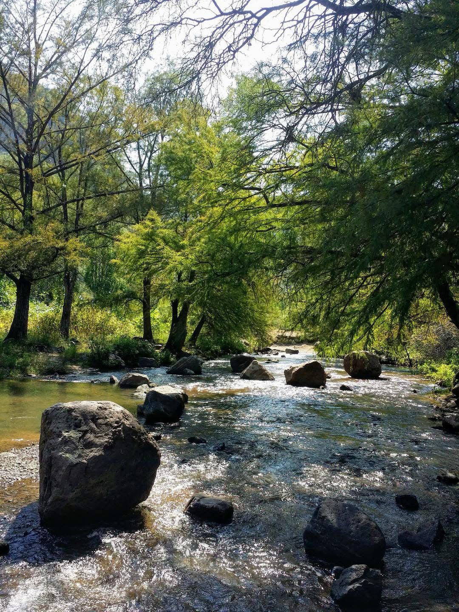
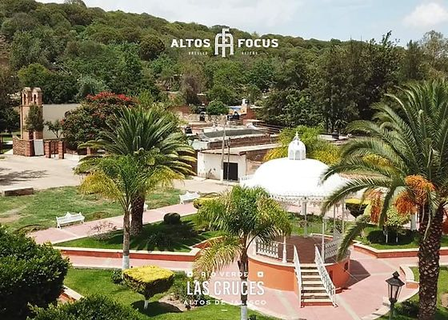
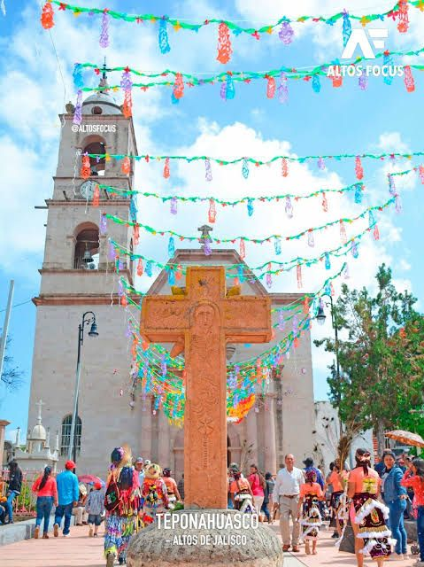
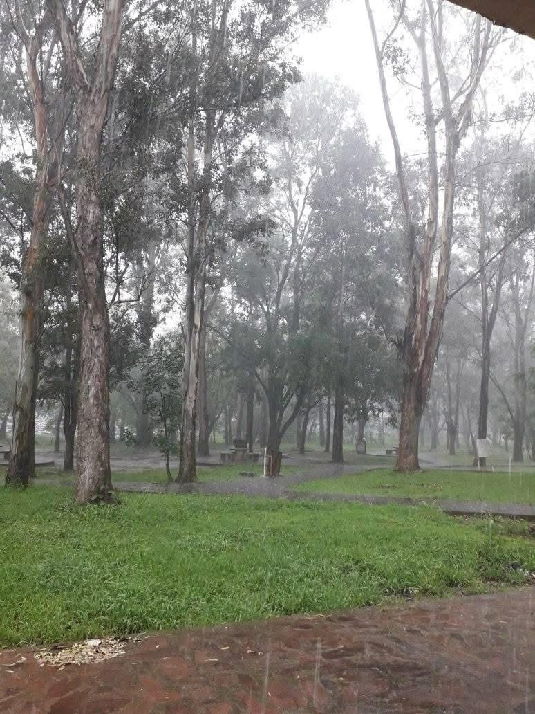
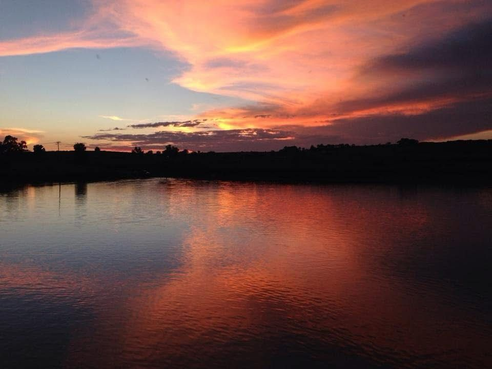
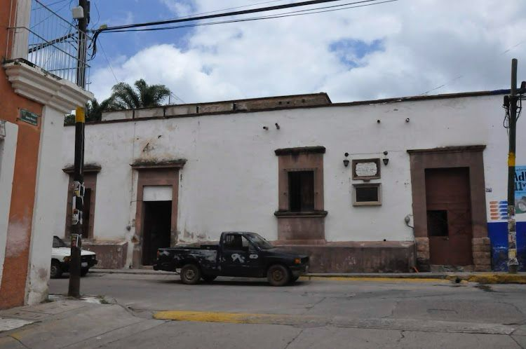
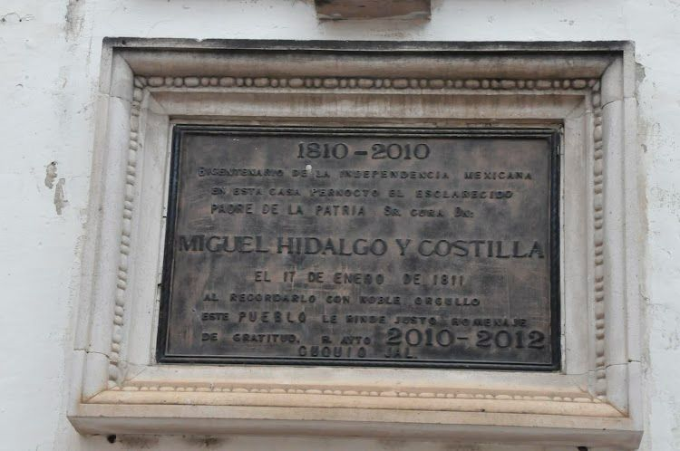

Es el río de aguas termales más profundo de Jalisco, ideal para nadar e incluso lanzarse clavados en algunas zonas. Rodeado de árboles frondosos y montañas, ofrece un entorno natural perfecto para acampar y relajarse. Es una alternativa más amplia y dinámica al Río Caliente, con aguas cálidas ideales para un día tranquilo y sin complicaciones.
Esta comunidad de Cuquío, Jalisco, está a solo 13 km de la cabecera municipal, con acceso asfaltado. Es reconocida por ser el lugar donde fueron martirizados San Justino Orona y San Atilano Cruz. Hoy cuenta con una calzada con bustos y un santuario junto a la casa del martirio, lo que la convierte en un sitio espiritual lleno de historia y devoción.
Teponahuasco, comunidad del municipio de Cuquío, Jalisco, es un lugar lleno de historia y espiritualidad. Es reconocido por la veneración al Señor de Teponahuasco, una antigua imagen de Cristo hecha con pasta de caña, famosa por sus finas facciones y su misterioso origen. Considerado protector de los viajeros y del pueblo, su culto ha dado origen a danzas tradicionales y expresiones de fe.
Un lugar tranquilo en el que puedes acampar, pescar y disfrutar de hermosos atardeceres con tus amigos o pareja.
 Miguel Hidalgo y Costilla pernoctó en Cuquío, Jalisco, el 17 de enero de 1811 después del descalabro que sufrió en el Puente Calderón del municipio de Zapotlanejo Jalisco. Allí peleo con piedras, machetes y palos dirigiéndose a Cuquío para partir después hacia Juchipila por Santa Rosa y Moyahua Zacatecas. En Cuquío descansó en una casona que aún se conserva. Para conmemorar su visita, en la plaza de armas de Cuquío se encuentra una escultura monumental de su cabeza.
 